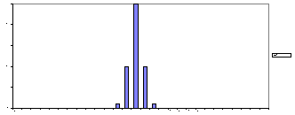
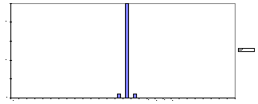
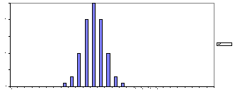
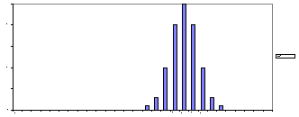
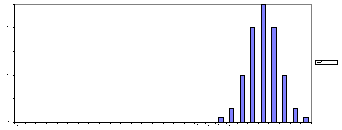

| Feature Article - March 1997 |
| by Do-While Jones |
The famous evolutionist, Richard Dawkins, has just published another book on evolution. This one is called Climbing Mount Improbable. It is an attempt to explain away the obvious problems with evolution using his parable of Mount Improbable.
Mount Improbable rears up from the plain, lofting its peaks dizzily to the rarefied sky. The towering, vertical cliffs of Mount Improbable can never, it seems, be climbed. Dwarfed like insects, thwarted mountaineers crawl and scrabble along the foot, gazing hopelessly at the sheer, unattainable heights. They shake their tiny, baffled heads and declare the brooding summit forever unscalable.
Our mountaineers are too ambitious. So intent are they on the perpendicular drama of the cliffs, they do not think to look round the other side of the mountain. There they would find not vertical cliffs and echoing canyons but gently inclined grassy meadows, graded steadily and easily towards the distant uplands. Occasionally the gradual ascent is punctuated by a small, rocky crag, but you can usually find a detour that is not too steep for a fit hill-walker in stout shoes and with time to spare. The sheer height of the peak doesn't matter, so long as you don't try to scale it in a single bound. Locate the mildly sloping path and, if you have unlimited time, the ascent is only as formidable as the next step. The story of Mount Improbable is, of course, a parable. We shall explore its meaning in this and the next chapters. 1
We must point out that the "mildly sloping path" is an article of faith. Mountaineers have circled the mountain many times looking for it, and have never found it. Dawkins believes that there must be such a path because there are people on the top of the mountain. Those people must have arrived there somehow, so he considers that to be proof that there must be an easy path.
If there were a mildly sloping path, then there would be traces of it in the fossil record. There would be fossils showing the transition of clam to fish, fish to frog, frog to lizard, etc. There are no such fossils. Mount Improbable is unscalable on every side. Furthermore, we are continually discovering that the sides are even steeper than we thought.
In the 19th century, it was plausible to believe that evolution could have happened. We didn't know much about biology then. We didn't understand the complexity of the living cell. We didn't know much about plant and animal physiology. We didn't understand how carefully balanced the ecological system has to be. Even as recently as a few years ago, scientists in Arizona thought that they could build a small-scale, self-sustaining environment. If nothing else, the well-publicized failure of Biosphere II should emphasize how tightly all living things are interconnected, and how difficult it is to keep it balanced.
Dawkins believes that the ecological system somehow naturally balanced itself. He devotes the last chapter of his book to an explanation of how figs and wasps must have evolved together because neither figs nor wasps can reproduce without each other. Don't read this chapter if you enjoy eating figs. They might not remain as appetizing when you realize there is a tiny dead wasp in every bite. But if you don't eat figs (or enjoy eating bugs), then I recommend you read this chapter carefully. Dawkins describes in precise details all the things that have to happen in the life-cycle of figs and wasps. According to Dawkins,
Almost every species of fig (and there are more than 900 of them) has its own private species of wasp which has been its lone genetic companion through evolutionary time since the two of them split off together from their respective predecessors. The wasps depend totally on the fig for their food and the fig depends utterly on the wasps to carry its pollen. Each species would go promptly extinct without the other. 2
Then he explains how the male wasps hatch inside the fig, fertilize the unborn females, and chew a hole in the fig so the female can escape. When the female hatches, she collects pollen for no other reason than to pollinate a fig, and crawls out the hole. Then, Dawkins says,
She flies off in the unaccustomed air, searching, probably by smell, for another fig of her own single right species. The individual fig that she seeks must also be in the right phase of its life, the phase in which female flowers are ripe.
Having found the right kind of fig, the female locates the minute hole at the tip of it and crawls through into the dark interior. The door is so narrow that she is likely to tear her wings out by the roots as she squeezes through. 3
Dawkins also explains the amazing things the wasp does once she gets inside. It is an incredible story that you really must read for yourself.
It takes great faith to believe that figs and wasps happened by accident, and are not the result of design. Dawkins, however, has this great faith, and a burning desire to spread the faith. He says,
I think that the distinction between accident and design is clear, in principle if not always in practice, but this chapter will introduce a third category of objects which is harder to distinguish. I shall call them designoid (pronounced 'design-oid' not 'dezziggnoid'). Designoid objects are living bodies and their products. Design objects look designed, so much that some people-probably, alas, most people-think they are designed. These people are wrong. But they are right in their conviction that designoid objects cannot be the result of chance. Designoid objects are not accidental. They have in fact been shaped by a magnificently non-random process which creates an almost perfect illusion of design. 4
The non-random process he is referring to is evolution by natural selection. Why does he believe natural selection has this marvelous power? One reason he gives is the eye. Dawkins begins his argument by quoting Charles Darwin.
To suppose that the eye, with all its inimitable contrivances for adjusting the focus to different distances, for admitting different amounts of light, and for the correction of spherical and chromatic aberration, could have been formed by natural selection, seems, I freely confess, absurd in the highest possible degrees. 5
The evolution of the eye has long been troublesome to evolutionists. For decades they claimed that given enough time, an eye could evolve. If eyes were only found in fossils in the upper layers of the geologic column, they might have been able to defend that argument. The problem is that some trilobites, which evolutionists believe lived in the Cambrian period 550 million years ago (where the fossil record begins), had eyes. Therefore, there weren't thousands of generations for eyes to develop.
Not only that, there are many different kinds of eyes. Dawkins says,
It has been authoritatively estimated that eyes have evolved no fewer than forty times, and probably more than sixty times, independently in various parts of the animal kingdom. In some cases these eyes use radically different principles. Nine distinct principles have been recognized among the forty to sixty independently evolved eyes. I'll mention some of the nine basic eye types-which we can think of as nine distinct peaks in different parts of Mount Improbable's massif-as I go on. 6
Dawkins gives 50 pages of technical details of how intricate the various kinds of eyes are, and some fantastic speculation about how they evolved. His conclusion is that since there are so many different kinds of eyes, eyes must have evolved many times, very quickly. Therefore, he says, natural selection must be much faster and much more powerful than we think. I'm not kidding. He says,
Figure 5.28 [which isn't reproduced here] shows a trilobite eye, from the Devonian era, nearly 400 million years ago. It looks just as advanced as a modern compound eye. This is what we should expect if the time it takes to evolve an eye is negligible by geological standards.
A central message of this chapter is that eyes evolve easily and fast, at the drop of a hat. 7
Bear in mind, that there isn't a single fossil with a partially developed eye to support his belief that eyes evolve. But now he has an excuse for lack of positive evidence. Eyes evolve so rapidly that the chances of finding a partially developed eye is negligible.
Dawkins partially bases his conclusions on some computer programs that he believes simulate evolution. The first such program he published was the Blind Watchmaker, which is described in a previous book with that name. His two new derivative programs he describes in Climbing Mount Improbable are the NetSpinner and Blind Snailmaker. NetSpinner simulates the evolution of spider webs. Blind Snailmaker simulates the evolution of sea shells.
The Blind Snailmaker program begins with a particular shaped snail, and generates a litter of baby snails that are slightly different from it. The user clicks on one of these children, and it becomes the new parent. The program then generates a litter of children slightly different from this new parent. This process continues, with the computer doing the mutations and the user playing the role of natural selection, until the snail with the desired shape has evolved.
I could write a program that starts with a snail of a particular shape and generates a litter of identical children. When the user clicks on one of these children, it becomes the new parent, which has another litter of identical children. The snail never evolves at all. My program wouldn't prove that evolution doesn't happen; Dawkins' program doesn't prove that evolution does happen.
George Lucas uses a very realistic simulation of Jabba the Hut in his hit movie, Star Wars Special Edition, but that doesn't mean Jabba the Hut exists. It doesn't matter how convincing Jabba looks. A simulation is valuable only when it can be shown that the simulation acts the same way the real thing does. 8 Is Dawkins' Blind Snailmaker program an accurate simulation? Let's examine it to find out.
The equation Dawkins uses to draw a geometric figure that looks very much like a snail has three parameters (flare, verm, and spire). Dawkins calls these parameters shell signature numbers. He explains,
In the program, the three shell signature numbers are each represented by one gene locus whose numerical value can vary. So we have three classes of mutation, small changes in flare, small changes in verm and small changes in spire. These mutational changes can be positive or negative, within limits. The flare gene has a minimum value of 1 (smaller values would indicate a shrinking rather than a growth process) and no fixed maximum value. The verm gene's value is a proportion, varying from 0 to just below 1 (a verm of 1 would indicate a tube so thin and wormy as to be non-existent). Spire has no limits: negative values trivially indicate an upside-down shell. 9
Does this algorithm perform the same way real life does? I believe it doesn't. To show why, let's consider an even simpler program. Let's imagine a Blind Basketball Player program. Instead of three signature numbers, this program has only one parameter (height). The object of the program is to grow tall basketball players. The height gene has a minimum value of 0, and "no fixed maximum value."
The program displays a 6-foot basketball player surrounded by
a litter of offspring whose height varies just slightly from the
parent. The user clicks on the tallest child, and it becomes the
new parent. If we were to plot the distribution of the heights
of the children produced by this simulation, we would get a series
of graphs with the same standard deviation, but increasing average,
as shown below.



After several generations, the parent would be 14 feet tall. The height would continue to grow without limit every generation. Clearly, this wouldn't be a valid simulation of what happens in real life.
In real life, if we were to select the tallest people from the population and let them breed, then select the tallest of their children and let them breed, and continue to do so for several generations, we would get a different series of graphs. The average height would increase, up to a fixed limit, and the amount of variation in height would decrease as we eliminate the smaller genes from the population. The series of height graphs would look something like this:


The children would all be very tall, perhaps 8 feet, with comparatively little difference in height. It is well established that there is a limit to what can be accomplished by selective breeding. Dawkins ignores this limit in his program, which is one reason why he is able to obtain the results he does.
Dawkins also ignores the fact that mutation is relativly rare. His program would be slightly more realistic if it produced a mutation once every 100 times the program runs. Of course, even with this unrealistically high rate of mutation, a human operator would quickly tire of running the program. Dawkins can be forgiven for producing several mutations every generation to make the program more user-friendly as long as he doesn't draw any conclusions about the rate of evolution from the program. But he does draw those kinds of conclusions. When describing the results of Nilsson and Peleger's NetSpinner-style enactment of evolution of a fish eye, he says that the program shows that 1,829 steps of 1% change would allow a fish eye to evolve "from nothing" in only 364,000 generations. 10
Suppose the rate of fish eye mutations is one in a million. If a million fish are born each generation, then you will get one step closer to a fully developed eye every generation, won't you? No, you won't. Suppose that in the first generation, the first beneficial eye mutation happens in fish number 36,892. In the second generation, a beneficial eye mutation might happen in the child of fish number 3,441 (which didn't have the first beneficial mutation). The development of the eye would start from scratch every time. Dawkins' belief that 1,829 steps will happen in 364,000 generations implies that every 199th generation (on the average) a mutation will happen in the descendent of the last individual to have a beneficial mutation. That just isn't reasonable.
Dawkins didn't make the distinction between a normal variation in a gene and a mutation in his simulation. Dawkins' Blind Snailmaker program draws shells with logarithmic spirals defined by three parameters. He lets the parameters vary slightly and calls the new shape a mutation. But that's just equivalent to a genetic variation. If the program randomly changed itself to draw a circle or an Archimedean spiral, that would be a mutation!
Dawkins recognizes that countless living things look unquestionably like they have been intelligently designed. His impossible mission is to prove that they weren't.
He argues that improbable things (like the evolution of the eye and the symbiotic relationship of figs and wasps) can't be as improbable as they seem because these things happened. His entire argument rests on his belief that since they exist, and since they could not have been intelligently designed, natural selection must have made them.
His computer simulations tell us how things would evolve if they evolved in the way Dawkins imagines they did. There is no validation that his computer models are correct, and they appear to violate known laws of genetics.
Mount Improbable doesn't have any gentle paths up the back. The cliffs are really as steep and unscalable as they appear. There is life on Mount Improbable because it was born there, not because it climbed up there.
| Quick links to | |
|---|---|
| Science Against Evolution Home Page |
Back issues of Disclosure (our newsletter) |
| Web Site of the Month |
Topical Index |
Footnotes:
1 Dawkins,
Climbing Mount Improbable, page 73
(Ev+)
2 Ibid. page 301
3 Ibid. pages 302 - 303
4 Ibid. pages 6 - 7
5 Darwin, C.
"Organs of extreme perfection and complication."
Quoted in Mount Improbable, page 139
6
Climbing Mount Improbable, pages 139 - 140
7 Ibid. page 190
8 I must admit I have written guided missile simulations
that did not act just like the real missile. (Not at first, anyway.)
9 Ibid. page 212
10 Ibid. pages 162 - 166